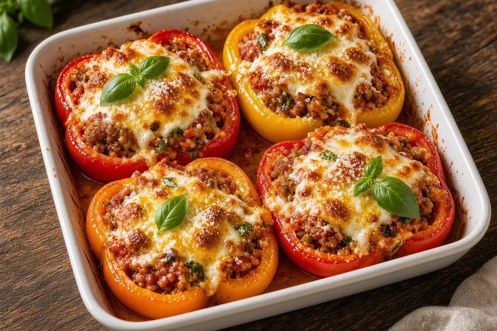

Italian Sausage Stuffed Peppers with Rice
Bell pepper halves piled with browned Italian sausage, tender rice, and marinara, then baked under melted mozzarella and Parmesan. A one-skillet filling and an easy pan-to-oven weeknight dinner in about 70 minutes.

6 servings
By
Yield: 6 servings
Prep:
Cook:
Total:
Difficulty: Easy
Ingredients
- 6 large bell peppers, any mix of colors
- 1 Tbsp olive oil
- 1/2 tsp kosher salt, for the peppers
- 1 cup long-grain white rice
- 2 cups water
- 1/2 tsp kosher salt, for the rice
- 2 lb ground Italian sausage, mild or hot
- 1 large yellow onion, diced
- 4 cloves garlic, minced
- 1 tsp dried Italian seasoning
- 1/2 tsp red pepper flakes, optional
- 1 jar (24 oz) marinara sauce, divided
- 3/4 cup grated Parmesan cheese, divided
- 2 cups shredded mozzarella cheese (8 oz)
- 2 Tbsp chopped fresh parsley, for serving
Instructions
- Heat the oven to 400°F. Cut the bell peppers in half lengthwise through the stems and scrape out the seeds and ribs. Set the pepper halves cut-side up in two 9x13 baking dishes, 6 halves per dish. Brush the insides with the olive oil and sprinkle with the 1/2 tsp kosher salt for the peppers. Roast 15 minutes while you make the filling; this head start lets the peppers soften at the same pace as the filling.
- Meanwhile, bring the water, the rice, and the 1/2 tsp kosher salt for the rice to a boil in a medium saucepan. Stir once, cover, reduce the heat to low, and cook 15 minutes, until the water is absorbed and the rice is tender. Take the pan off the heat and let the rice steam, covered, 5 minutes, then fluff it with a fork.
- While the rice cooks, set a large HexClad skillet over medium-high heat. Add the Italian sausage, break it into small crumbles, and cook 8 to 10 minutes, until browned and no pink remains (at least 160°F). Add the onion and cook 4 to 5 minutes, until soft. Stir in the garlic, Italian seasoning, and red pepper flakes and cook 1 minute. Tip off all but about 2 Tbsp of the fat.
- Take the skillet off the heat. Stir in the cooked rice, 1 1/2 cups of the marinara sauce, and 1/2 cup of the Parmesan cheese. Taste and add a pinch of salt only if it needs it; the sausage is already well seasoned.
- Pull the peppers from the oven. Mound the filling into the pepper halves, about 3/4 cup each, and spoon the remaining marinara sauce (about 1 cup) over the tops. Cover each dish tightly with foil and bake 15 minutes.
- Uncover, scatter the mozzarella and the remaining 1/4 cup Parmesan over the peppers, and bake 10 to 12 minutes more, until the cheese is melted and spotted golden, the sauce is bubbling, the peppers are fork-tender, and the filling reads at least 165°F. If the cheese needs more color, broil 1 to 2 minutes, watching closely. If the peppers are still firm, re-cover and bake 5 to 10 minutes longer.
- Let the peppers rest 5 minutes so the filling sets, then sprinkle with the parsley and serve 2 halves per person.
Notes: Two 9x13 dishes hold all 12 pepper halves without crowding. Leftover peppers keep 4 days covered in the refrigerator; reheat covered at 350°F for 20 minutes.